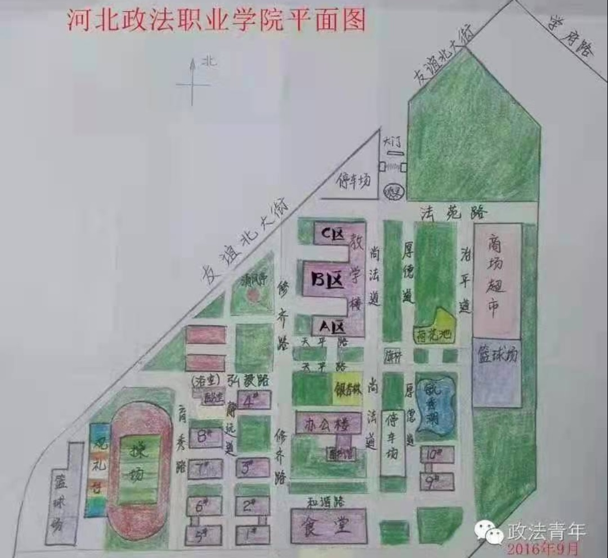

问题解决
校园地图
微信公众号
乘车路线
1. 石家庄站—河北政法职业学院校本部
地铁3号线→113路（政法西院公交站下车）；9路→34路→113路（政法西院公交站下车）
2. 石家庄北站——河北政法职业学院校本部
68路→113路（政法西院公交站下车）；164路→113路（政法西院公交站下车）；
38路→113路（政法西院公交站下车）
3. 石家庄东站——河北政法职业学院校本部
地铁1号线 → 地铁3号线 → 113路（政法西院公交站下车）；
地铁1号线 → 108路 → 113路（政法西院公交站下车）；
519路 → 2环2路 → 113路（政法西院公交站下车）
4. 石家庄站——河北政法职业学院北院
地铁2号线→112路
5. 石家庄北站——河北政法职业学院北院
68路→113路；164路→113路
6. 石家庄东站——河北政法职业学院北院
地铁1号线 → 地铁2号线 → 112路；地铁1号线 → 77路 → 112路
温馨提示：为确保人身安全，如打车请选择正规出租车出行